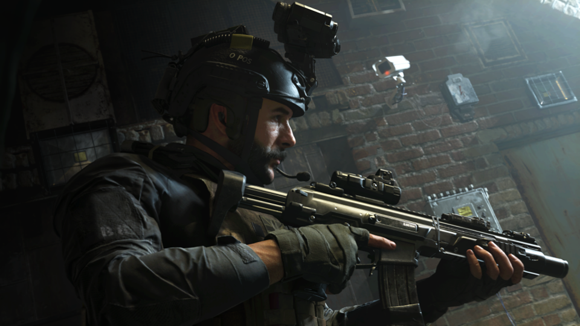

November Game of the Month: Call of Duty Modern Warfare
Posted November 14, 2019

I know, I know. Call of Duty hasn't been the most
Fast forward a year and I've made a name for myself in the modding community. I made a small handful of tutorials for newcomers, the most comprehensive of which can be found here, and partook in discussions of map layouts, weapon modifications, scripting, and more. When CoD4 was announced, I was ecstatic. The new modding tools allowed for more refined map details, new lighting, and more toys to play with in the modding suite.
That's where my entire history of computer involvement comes from, and it has played a large part in who I've become as a person, as it led me to get involved with modding on the Source engine, dabbling in web development, and eventually breaking into the vast world of programming. So when the new Modern Warfare was announced, I had to break my boycott of the series to see what it had in store.
It's great fun, but it feels rushed.
There are a number of waves to the previous iteration of the timeline, CoD4, but they feel shoehorned in to a story that could have certainly stood on its own. The references made and stories told in CoD4 were there to build character's backgrounds, establish plot threads, and advance the growth of the story. It left just enough mystery behind each of the characters to keep us intrigued, and blatantly showed (via nukes) that plots were happening in the background without our involvement. In MW, all of that is inverted. Characters are fully explored to the point where you have their entire life story on a plate before you, removing the intrigue entirely. The entire story plays out before your eyes, making you feel as though the entire story revolves around you. Much of the things that keep people intrigued have been stripped away, leaving the story quite bare. This was probably due to this year being the first in several to include a story mode in the game as opposed to just pure multiplayer, so at least it's a step back in the right direction.
If you've been following the series over the past few years, it's a great iteration that stands up to the high standards the series used to adhere to. If you're looking to come back to the series after a break, like me, it's worth your time, but it can wait for a sale to come out. If you're not one for FPS games, it's still not for you.